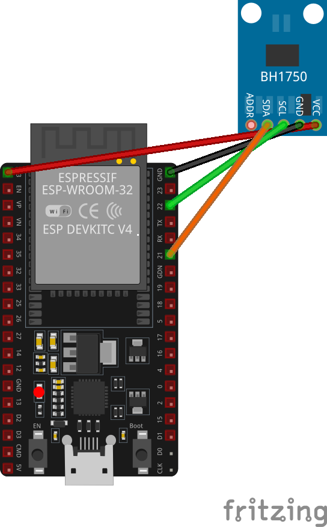
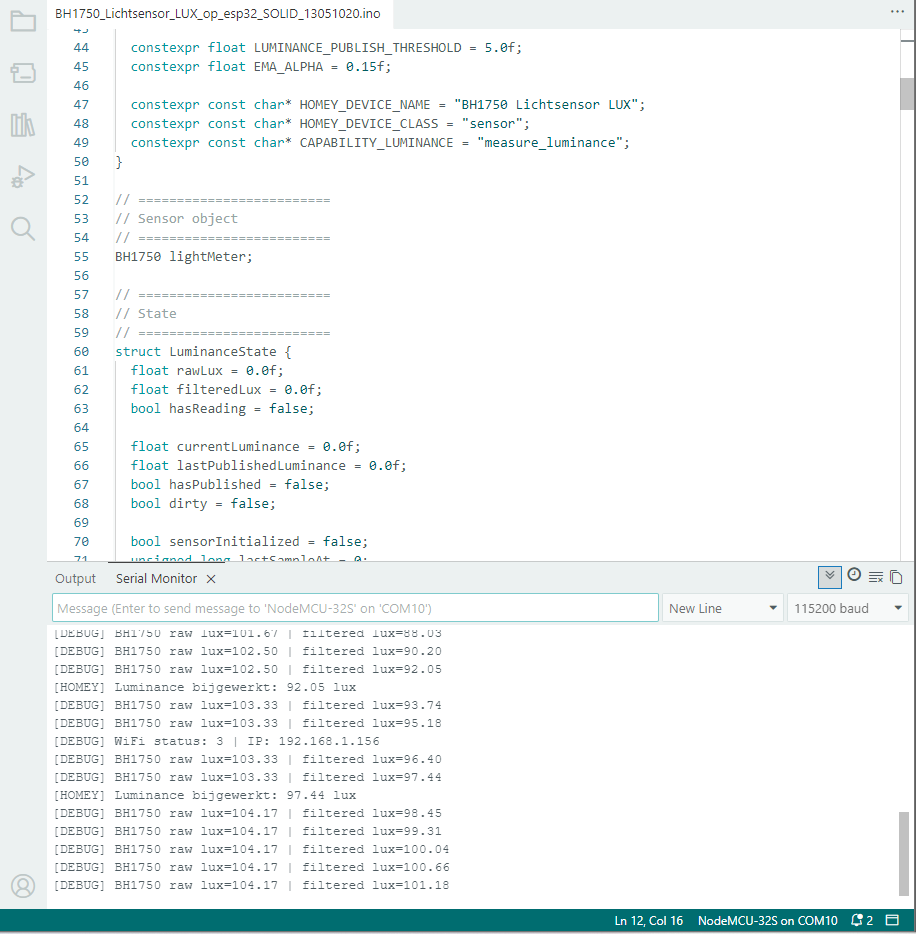
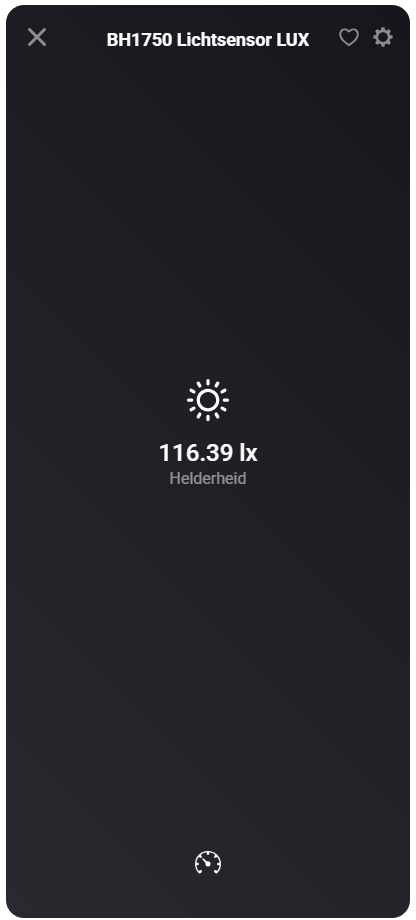

Een lichtsensor is een van die kleine onderdelen die een smart home net wat slimmer laat reageren. Denk aan verlichting die alleen aangaat als het echt donker genoeg is, of een flow die overdag anders reageert dan in de avond.
In een eerdere opzet kun je dit doen met een LDR. Dat werkt prima voor eenvoudige licht-donker-detectie, maar de BH1750 is een nettere oplossing wanneer je met exacte luxwaarden wilt werken. De sensor communiceert via I2C met de ESP32 en levert een meetwaarde die Homey direct als helderheid kan tonen.
Wat ga je bouwen?
In dit project maak je een digitale lichtsensor op basis van een ESP32 DevKit, een BH1750-module en Homeyduino. De ESP32 leest de sensor uit, filtert de waarde lichtjes en stuurt de luxwaarde naar Homey.
- Digitale luxsensor → de BH1750 meet lichtsterkte als luxwaarde en niet als ruwe analoge waarde.
- Homey-apparaat → in Homey verschijnt de sensor als apparaat met de waarde Helderheid.
Het resultaat is een compacte DIY-sensor die je kunt gebruiken als trigger of voorwaarde in Homey-flows.
Benodigdheden
- ESP32 DevKit, in dit voorbeeld gebruikt als NodeMCU-32S
- BH1750FVI digital light sensor module
- Arduino IDE
- Homeyduino-library
- BH1750-library en een USB-datakabel
Handige links bij dit project
Dit zijn producten die aansluiten op de benodigdheden in dit artikel.
Stap-voor-stap uitleg
1. Sluit de BH1750 aan op de ESP32
De BH1750 gebruikt I2C. Daardoor heb je naast voeding en ground twee signaallijnen nodig: SDA voor data en SCL voor de kloklijn. Op een standaard ESP32 DevKit gebruik je meestal GPIO 21 voor SDA en GPIO 22 voor SCL.
- VCC → 3V3
- GND → GND
- SDA / data → GPIO 21
- SCL / clock → GPIO 22
De ADDR-pin hoef je in deze opzet niet aan te sluiten. Laat je ADDR los, dan gebruikt de sensor normaal het standaard I2C-adres. Sluit je ADDR bewust hoog aan, dan kan het adres wijzigen. Dat is vooral handig wanneer je twee BH1750-sensoren op dezelfde I2C-bus wilt gebruiken.

2. Installeer de juiste libraries
Voor deze sketch heb je in ieder geval de libraries Wire.h, BH1750.h, WiFi.h en Homey.h nodig. Wire.h en WiFi.h horen bij de ESP32-omgeving. De BH1750- en Homeyduino-library voeg je toe via de Arduino IDE.
3. Upload de code naar de ESP32
Gebruik in de Arduino IDE een ESP32-boardprofiel dat past bij jouw DevKit. In dit voorbeeld werkte de opzet met NodeMCU-32S. Vul in de code je eigen WiFi-naam en wachtwoord in en upload daarna de sketch.
// Code for Homeyduino made by Smart Home Blog https://huisvanvandaag.nl
// ESP32 DevKit + BH1750 version with reconnect, Homey re-init and failsafe restart support.
#include <WiFi.h>
#include <Wire.h>
#include <BH1750.h>
#include <Homey.h>
// =========================
// Debug instellingen
// =========================
#define DEBUG 0 // 1 = debug aan, 0 = debug uit
#if DEBUG
#define DBG_PRINT(x) Serial.print(x)
#define DBG_PRINTLN(x) Serial.println(x)
#else
#define DBG_PRINT(x)
#define DBG_PRINTLN(x)
#endif
// =========================
// Configuratie
// =========================
namespace Config {
constexpr const char* WIFI_SSID = "SSID";
constexpr const char* WIFI_PASSWORD = "{PASSWORD}";
// ESP32 DevKit standaard I2C-pinnen
constexpr uint8_t I2C_SDA_PIN = 21;
constexpr uint8_t I2C_SCL_PIN = 22;
constexpr unsigned long WIFI_CHECK_INTERVAL_MS = 15000;
constexpr unsigned long WIFI_CONNECT_TIMEOUT_MS = 30000;
constexpr unsigned long SENSOR_SAMPLE_INTERVAL_MS = 1000;
constexpr unsigned long SENSOR_REINIT_INTERVAL_MS = 30000;
constexpr unsigned long HOMEY_HEARTBEAT_INTERVAL_MS = 60000;
constexpr unsigned long HOMEY_STALE_TIMEOUT_MS = 300000;
constexpr unsigned long HOMEY_REINIT_COOLDOWN_MS = 60000;
constexpr unsigned long FAILSAFE_RESTART_COOLDOWN_MS = 900000;
constexpr float LUMINANCE_PUBLISH_THRESHOLD = 5.0f;
constexpr float EMA_ALPHA = 0.15f;
constexpr const char* HOMEY_DEVICE_NAME = "BH1750 Lichtsensor LUX";
constexpr const char* HOMEY_DEVICE_CLASS = "sensor";
constexpr const char* CAPABILITY_LUMINANCE = "measure_luminance";
}
// =========================
// Sensor object
// =========================
BH1750 lightMeter;
// =========================
// State
// =========================
struct LuminanceState {
float rawLux = 0.0f;
float filteredLux = 0.0f;
bool hasReading = false;
float currentLuminance = 0.0f;
float lastPublishedLuminance = 0.0f;
bool hasPublished = false;
bool dirty = false;
bool sensorInitialized = false;
unsigned long lastSampleAt = 0;
unsigned long lastPublishAt = 0;
unsigned long lastSensorInitAttemptAt = 0;
};
struct WifiState {
unsigned long lastCheckAt = 0;
bool wasConnected = false;
bool reconnectedEvent = false;
};
struct HomeyState {
bool initialized = false;
bool reinitRequested = false;
unsigned long lastActivityAt = 0;
unsigned long lastInitAt = 0;
unsigned long lastRestartAt = 0;
};
LuminanceState luminanceState;
WifiState wifiState;
HomeyState homeyState;
// =========================
// Functiedeclaraties
// =========================
void connectToWifiWithTimeout();
void maintainWifi(unsigned long currentMillis);
bool canPublishToHomey();
void initializeHomey(unsigned long currentMillis);
void requestHomeyReinitialize();
void maintainHomey(unsigned long currentMillis);
void markHomeyActivity(unsigned long currentMillis);
void runFailsafeRestartCheck(unsigned long currentMillis);
void performControlledRestart();
void initializeBh1750(unsigned long currentMillis);
void maintainBh1750(unsigned long currentMillis);
void processLuminanceSensor(unsigned long currentMillis);
float readLux();
void updateFilteredLuminance(float lux);
void markLatestLuminance();
bool shouldPublishLuminance(unsigned long currentMillis);
void publishLatestLuminanceToHomey(unsigned long currentMillis);
void syncLuminanceIfDirty(unsigned long currentMillis);
// =========================
// Setup
// =========================
void setup() {
Serial.begin(115200);
delay(250);
Serial.println();
Serial.println(F("--- ESP32 BH1750 Luminance Sensor Gestart ---"));
Wire.begin(Config::I2C_SDA_PIN, Config::I2C_SCL_PIN);
initializeBh1750(millis());
WiFi.mode(WIFI_STA);
WiFi.setAutoReconnect(true);
WiFi.persistent(true);
connectToWifiWithTimeout();
initializeHomey(millis());
luminanceState.lastSampleAt = millis() - Config::SENSOR_SAMPLE_INTERVAL_MS;
}
// =========================
// Main loop
// =========================
void loop() {
const unsigned long currentMillis = millis();
maintainWifi(currentMillis);
maintainHomey(currentMillis);
maintainBh1750(currentMillis);
if (homeyState.initialized && WiFi.status() == WL_CONNECTED) {
Homey.loop();
}
yield();
if (wifiState.reconnectedEvent) {
wifiState.reconnectedEvent = false;
syncLuminanceIfDirty(currentMillis);
}
processLuminanceSensor(currentMillis);
runFailsafeRestartCheck(currentMillis);
}
// =========================
// WiFi
// =========================
void connectToWifiWithTimeout() {
WiFi.begin(Config::WIFI_SSID, Config::WIFI_PASSWORD);
Serial.print(F("Verbinden met WiFi..."));
const unsigned long startAttemptTime = millis();
while (WiFi.status() != WL_CONNECTED &&
millis() - startAttemptTime < Config::WIFI_CONNECT_TIMEOUT_MS) {
delay(500);
Serial.print(F("."));
}
Serial.println();
if (WiFi.status() == WL_CONNECTED) {
Serial.print(F("[SUCCES] Verbonden! IP-adres: "));
Serial.println(WiFi.localIP());
wifiState.wasConnected = true;
} else {
Serial.println(F("[WIFI] Timeout bereikt. Sensor start zonder wifi."));
wifiState.wasConnected = false;
}
}
void maintainWifi(unsigned long currentMillis) {
if (currentMillis - wifiState.lastCheckAt < Config::WIFI_CHECK_INTERVAL_MS) {
return;
}
wifiState.lastCheckAt = currentMillis;
wifiState.reconnectedEvent = false;
DBG_PRINT(F("[DEBUG] WiFi status: "));
DBG_PRINT(WiFi.status());
DBG_PRINT(F(" | IP: "));
DBG_PRINTLN(WiFi.localIP());
const wl_status_t status = WiFi.status();
if (status == WL_CONNECTED) {
if (!wifiState.wasConnected) {
Serial.print(F("[WIFI] Opnieuw verbonden! IP-adres: "));
Serial.println(WiFi.localIP());
wifiState.wasConnected = true;
wifiState.reconnectedEvent = true;
requestHomeyReinitialize();
}
return;
}
if (wifiState.wasConnected) {
Serial.println(F("[WIFI] Verbinding kwijt. Herstellen..."));
wifiState.wasConnected = false;
homeyState.initialized = false;
requestHomeyReinitialize();
} else {
Serial.println(F("[WIFI] Nog niet verbonden. Nieuwe poging..."));
}
WiFi.disconnect();
delay(100);
WiFi.begin(Config::WIFI_SSID, Config::WIFI_PASSWORD);
}
bool canPublishToHomey() {
return WiFi.status() == WL_CONNECTED && homeyState.initialized;
}
// =========================
// Homey
// =========================
void initializeHomey(unsigned long currentMillis) {
if (WiFi.status() != WL_CONNECTED) {
homeyState.initialized = false;
return;
}
Homey.begin(Config::HOMEY_DEVICE_NAME);
Homey.setClass(Config::HOMEY_DEVICE_CLASS);
Homey.addCapability(Config::CAPABILITY_LUMINANCE);
homeyState.initialized = true;
homeyState.reinitRequested = false;
homeyState.lastInitAt = currentMillis;
markHomeyActivity(currentMillis);
Serial.println(F("[HOMEY] Homey opnieuw geïnitialiseerd."));
}
void requestHomeyReinitialize() {
homeyState.reinitRequested = true;
}
void maintainHomey(unsigned long currentMillis) {
if (WiFi.status() != WL_CONNECTED) {
homeyState.initialized = false;
return;
}
if (!homeyState.initialized) {
initializeHomey(currentMillis);
return;
}
if (!homeyState.reinitRequested) {
return;
}
if (currentMillis - homeyState.lastInitAt < Config::HOMEY_REINIT_COOLDOWN_MS) {
return;
}
initializeHomey(currentMillis);
}
void markHomeyActivity(unsigned long currentMillis) {
homeyState.lastActivityAt = currentMillis;
}
void runFailsafeRestartCheck(unsigned long currentMillis) {
if (WiFi.status() != WL_CONNECTED) {
return;
}
if (!homeyState.initialized) {
return;
}
const bool homeyLooksStale =
(currentMillis - homeyState.lastActivityAt) >= Config::HOMEY_STALE_TIMEOUT_MS;
if (!homeyLooksStale) {
return;
}
const bool restartCooldownPassed =
(currentMillis - homeyState.lastRestartAt) >= Config::FAILSAFE_RESTART_COOLDOWN_MS;
if (!restartCooldownPassed) {
return;
}
Serial.println(F("[FAILSAFE] Te lang geen Homey-activiteit. Gecontroleerde herstart..."));
homeyState.lastRestartAt = currentMillis;
delay(250);
performControlledRestart();
}
void performControlledRestart() {
ESP.restart();
}
// =========================
// BH1750
// =========================
void initializeBh1750(unsigned long currentMillis) {
luminanceState.lastSensorInitAttemptAt = currentMillis;
if (lightMeter.begin(BH1750::CONTINUOUS_HIGH_RES_MODE)) {
luminanceState.sensorInitialized = true;
Serial.println(F("[BH1750] Sensor geïnitialiseerd."));
} else {
luminanceState.sensorInitialized = false;
Serial.println(F("[BH1750] Initialisatie mislukt. Controleer SDA/SCL/VCC/GND."));
}
}
void maintainBh1750(unsigned long currentMillis) {
if (luminanceState.sensorInitialized) {
return;
}
if (currentMillis - luminanceState.lastSensorInitAttemptAt < Config::SENSOR_REINIT_INTERVAL_MS) {
return;
}
Serial.println(F("[BH1750] Nieuwe initialisatiepoging..."));
initializeBh1750(currentMillis);
}
// =========================
// Sensorlogica
// =========================
void processLuminanceSensor(unsigned long currentMillis) {
if (!luminanceState.sensorInitialized) {
return;
}
if (currentMillis - luminanceState.lastSampleAt < Config::SENSOR_SAMPLE_INTERVAL_MS) {
return;
}
luminanceState.lastSampleAt = currentMillis;
const float lux = readLux();
if (lux < 0.0f || isnan(lux)) {
Serial.println(F("[BH1750] Ongeldige meting ontvangen."));
luminanceState.sensorInitialized = false;
return;
}
updateFilteredLuminance(lux);
markLatestLuminance();
DBG_PRINT(F("[DEBUG] BH1750 raw lux="));
DBG_PRINT(luminanceState.rawLux);
DBG_PRINT(F(" | filtered lux="));
DBG_PRINTLN(luminanceState.currentLuminance);
if (shouldPublishLuminance(currentMillis)) {
publishLatestLuminanceToHomey(currentMillis);
}
}
float readLux() {
return lightMeter.readLightLevel();
}
void updateFilteredLuminance(float lux) {
luminanceState.rawLux = lux;
if (!luminanceState.hasReading) {
luminanceState.filteredLux = lux;
luminanceState.hasReading = true;
return;
}
luminanceState.filteredLux =
(Config::EMA_ALPHA * lux) +
((1.0f - Config::EMA_ALPHA) * luminanceState.filteredLux);
}
void markLatestLuminance() {
luminanceState.currentLuminance = luminanceState.filteredLux;
if (!luminanceState.hasPublished) {
luminanceState.dirty = true;
return;
}
luminanceState.dirty =
fabs(luminanceState.currentLuminance - luminanceState.lastPublishedLuminance) >=
Config::LUMINANCE_PUBLISH_THRESHOLD;
}
bool shouldPublishLuminance(unsigned long currentMillis) {
if (!luminanceState.hasReading) {
return false;
}
const bool heartbeatReached =
(currentMillis - luminanceState.lastPublishAt) >= Config::HOMEY_HEARTBEAT_INTERVAL_MS;
return luminanceState.dirty || heartbeatReached;
}
void publishLatestLuminanceToHomey(unsigned long currentMillis) {
if (!luminanceState.hasReading) {
return;
}
if (!canPublishToHomey()) {
luminanceState.dirty = true;
Serial.println(F("[WAARSCHUWING] Laatste luminance lokaal bewaard (geen WiFi/Homey)."));
return;
}
Homey.setCapabilityValue(
Config::CAPABILITY_LUMINANCE,
luminanceState.currentLuminance
);
luminanceState.lastPublishedLuminance = luminanceState.currentLuminance;
luminanceState.lastPublishAt = currentMillis;
luminanceState.hasPublished = true;
luminanceState.dirty = false;
markHomeyActivity(currentMillis);
Serial.print(F("[HOMEY] Luminance bijgewerkt: "));
Serial.print(luminanceState.currentLuminance);
Serial.println(F(" lux"));
}
void syncLuminanceIfDirty(unsigned long currentMillis) {
if (!luminanceState.dirty) {
return;
}
Serial.println(F("[HOMEY] Laatste luminance synchroniseren..."));
publishLatestLuminanceToHomey(currentMillis);
}4. Controleer de Serial Monitor
Open de Serial Monitor op 115200 baud. Bij een geslaagde start zie je onder meer dat de BH1750 is geïnitialiseerd, dat de ESP32 met WiFi verbonden is en dat Homey opnieuw is geïnitialiseerd.
5. Zet debug aan als je meer wilt zien
Standaard staat debug uit. Wil je zien hoe de ruwe en gefilterde luxwaarde zich gedragen, zet dan #define DEBUG 0 tijdelijk om naar #define DEBUG 1. Dat is vooral handig bij het bepalen van een goede drempelwaarde voor je Homey-flows.

Integratie met Homey
In Homey wordt de sensor toegevoegd als Homeyduino-apparaat met de capability measure_luminance. Daardoor toont Homey de waarde als helderheid in lux.
Dat maakt de sensor geschikt voor praktische flows, bijvoorbeeld:
- Schakel verlichting alleen in wanneer de helderheid lager is dan een gekozen luxwaarde.
- Gebruik de lichtwaarde als extra voorwaarde bij bewegingssensoren.
- Laat screens, gordijnen of sfeerlicht anders reageren afhankelijk van de hoeveelheid daglicht.

Praktisch gebruik
De code gebruikt een eenvoudige EMA-filtering. Daardoor reageert de sensor niet op elke kleine schommeling, maar blijft de waarde wel bruikbaar voor automatiseringen. Daarnaast wordt pas opnieuw gepubliceerd wanneer de waarde voldoende verandert of wanneer de heartbeat is bereikt.
Bij het testen kwam ook een praktisch punt naar voren: de ESP32 werd eerst niet goed herkend door de Arduino IDE. In dit geval bleek dat geen fout in de sketch te zijn, maar een USB-driverprobleem. Na het installeren van een oudere CH340-driver werd het board weer correct herkend en kon de code normaal worden geüpload.
Aandachtspunten
- Gebruik een USB-kabel die ook data ondersteunt; veel laadkabels werken niet voor uploaden.
- Controleer bij uploadproblemen of jouw ESP32-board een CH340 USB-chip gebruikt en of de driver goed werkt.
- Let op SDA en SCL: SDA is de datalijn, SCL is de kloklijn. Wissel je ze om, dan wordt de sensor meestal niet gevonden.
- Laat ADDR los voor de standaardopzet. Gebruik ADDR alleen bewust wanneer je het I2C-adres wilt wijzigen.
- Als Homeyduino compileert met ESP32-pinmapfouten, controleer dan of jouw Homeyduino-library geschikt is voor jouw ESP32-board.
Conclusie
Met een ESP32 DevKit en een BH1750-module maak je een nette, digitale lichtsensor voor Homey. Ten opzichte van een simpele LDR is vooral het werken met echte luxwaarden prettig. Daardoor kun je in Homey concretere en stabielere flows maken, bijvoorbeeld voor verlichting die alleen reageert wanneer het in huis echt donker genoeg is.